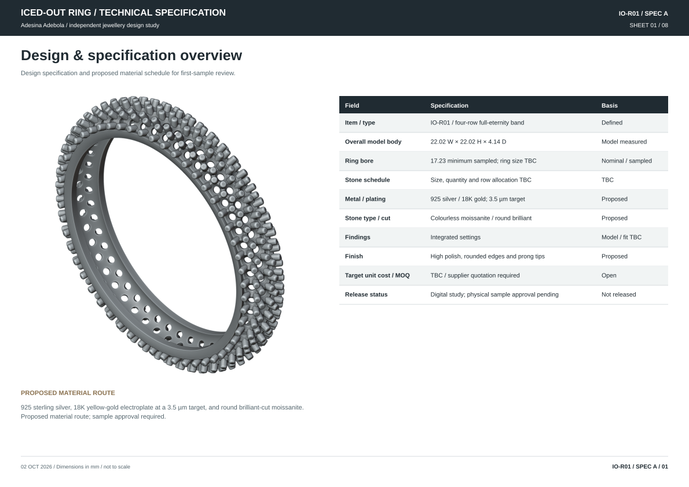

ADESINA ADEBOLA / INDEPENDENT DESIGN STUDY
Iced-out ring
Technical specification / IO-R01 / SPEC A / 02 October 2026
Supplier review - not released for production
01 / Design & specification overview
View sheet ⤢
Design specification and proposed material schedule for first-sample review.

| Field | Specification | Basis |
|---|---|---|
| Item / type | IO-R01 / four-row full-eternity band | Defined |
| Overall model body | 22.02 W × 22.02 H × 4.14 D | Model measured |
| Ring bore | 17.23 minimum sampled; ring size TBC | Nominal / sampled |
| Stone schedule | Size, quantity and row allocation TBC | TBC |
| Metal / plating | 925 silver / 18K gold; 3.5 µm target | Proposed |
| Stone type / cut | Colourless moissanite / round brilliant | Proposed |
| Findings | Integrated settings | Model / fit TBC |
| Finish | High polish, rounded edges and prong tips | Proposed |
| Target unit cost / MOQ | TBC / supplier quotation required | Open |
| Release status | Digital study; physical sample approval pending | Not released |
925 sterling silver, 18K yellow-gold electroplate at a 3.5 µm target, and round brilliant-cut moissanite. Proposed material route; sample approval required.
02 / Assembly dimensions
View sheet ⤢Orthographic dimensions of the pre-setting metal body. All stated dimensions are in millimetres.

| ID | Feature | Value (mm) | Basis |
|---|---|---|---|
| D01 | Model body W × H × D | 22.02 × 22.02 × 4.14 | Model units interpreted as mm; calibration TBC |
| D02 | Model axes X × Y × Z | 22.02 × 4.14 × 22.02 | Ring axis along Y |
| D03 | Stone schedule | Size, quantity and row allocation TBC | Specify purchased stones before seat cutting |
| D04 | Minimum sampled bore | 17.23 | Radial section samples; nominal ring size TBC |
03 / Construction & stone setting
View sheet ⤢Pre-setting construction, prong geometry and stone schedule.

| ID | Part / quantity | Nominal geometry (mm) | Setting basis |
|---|---|---|---|
| B01 | Metal body / 1 | 22.02 W × 22.02 H × 4.14 D | Model dimensions; unit calibration TBC |
| G01 | Galleries | Open passages below the settings | Finished wall thickness and polish access TBC |
| P01 | Setting network | Integrated prongs and bearing features | Stock allowance and purchased-stone fit TBC |
| S01 | Stones | Round brilliant moissanite proposed | Quantity, sizes and row allocation TBC |
04 / Materials, finish & bill of materials
View sheet ⤢
Proposed alloy, stone, coating and surface specifications.
| BOM / field | Specification | Acceptance / status |
|---|---|---|
| M01 / body | 925 sterling silver; one-piece investment casting | Proposed. Supplier alloy certificate and casting suitability required. |
| M02 / gold layer | 18K yellow-gold electroplate; 3.5 µm target | Proposed. Supplier to declare actual stack, process, local minimum and measurement uncertainty. |
| M03 / underlayer | Composition and thickness TBC | Declare barrier/strike layers; no unapproved substitution. Confirm skin-contact requirements for destination market. |
| S01 / stones | Round brilliant moissanite; size and quantity TBC | Proposed material; colourless matched lot. Grade, treatment, origin and profile TBC. |
| S02 / stone matching | Row allocation and purchased-stone schedule TBC | Proposed material. Measure girdle, total depth, pavilion and diameter range before seats. |
| F01 / findings | Integrated cast settings | Any solder/weld filler requires process approval. |
| Finish / polish | High polish on exposed metal; rounded prong tips and contact edges | Maintain gallery access and local section sizes. Finish sample becomes visual master. |
| Marking / packaging | Maker/material mark and location TBC; individually protected | Verify alloy before marking; include packaging in the quotation. |
Material substitutions require review of casting, setting and finishing requirements.
05 / Manufacturing route & tolerances
View sheet ⤢
Proposed manufacturing stages and first-sample acceptance targets.
| Stage / control | Requirement | Verification / responsibility |
|---|---|---|
| 1 / freeze | Confirm alloy, stone purchase profiles, ring size and source units | Designer + supplier; required before tooling |
| 2 / pattern | Approve a watertight casting master with seat and prong stock matched to purchased stones | Supplier to choose compensated scale, resin, orientation, supports and sprues |
| 3 / cast / prefinish | Investment cast and prefinish inaccessible galleries | Confirm fill, porosity, distortion and remaining section; no blocked cleaning access |
| 4 / stone set | Measure purchased stones; cut/finish bearings; set and close prongs | No glue as a substitute for mechanical retention; verify every seat |
| 5 / finish / plate | Final polish and coating sequence agreed with stone/chemistry compatibility | Supplier to document sequence and protect stones; no unapproved coating stack |
| T01 / bore | Approved finished bore target ±0.05 mm | Proposed; nominal finished bore TBC. Gauge at multiple angles and axial positions. |
| T02 / overall envelope | Approved finished overall envelope ±0.10 mm | Proposed; finish allowance/stone height may require revised nominal. |
| T03 / stone placement | Stone centre positions ±0.05 mm from approved setting master | Proposed; actual stone grading and setter capability must be checked. |
| T04 / sections / seats | Minimum finished wall, gallery and prong thickness: TBC | Set by alloy, casting process and seat geometry. |
| T05 / plating | 3.5 µm target; local minimum/upper limit TBC after process trial | Proposed. Calibrated XRF method and measurement sites must be agreed. |
Tolerances apply only after a signed sample master exists. Do not shrink or enlarge the production file by an assumed universal percentage. Record tool compensation separately from design dimensions.
06 / Sample review & quality control
View sheet ⤢
First-article inspection criteria and records.
| Check | Acceptance criterion | Method / record | Classification |
|---|---|---|---|
| Q01 / identity | Alloy and stone identity match approved BOM | Supplier certificates + suitable material/stone verification; coating can affect surface readings. | Reject substitution |
| Q02 / size | Bore and envelopes within agreed finished targets | Calibrated gauges; multiple orientations; record measured values and equipment. | Major |
| Q03 / setting | Approved BOM stone count present; level seating; no movement or chipped girdles | Inspect every stone under magnification; retention test method/load TBC with setter. | Critical if loose/missing |
| Q04 / prongs | Rounded consistent tips; contour-matched bearings; sufficient metal | Inspect every bearing, stone contact and prong tip under magnification. | Major |
| Q05 / surface | No burrs, sharp points, visible pits or blocked galleries | Visual master comparison and snag check. | Major / minor by zone |
| Q06 / coating | Approved thickness, colour and coverage on significant surfaces | Calibrated local XRF check at outer shank, inner bore and accessible setting; sites agreed with supplier. | Major |
| Q07 / durability | Retention, finish wear and skin-contact performance validated | Supplier to propose quantified wear, sweat and adhesion protocols, limits and reports before testing. | Release gate |
| Q08 / stacking | No stone-to-metal rubbing; comfortable fit and removal | Wear trial with selected partner rings; photograph clearances and record actual sizes. | Release gate |
| Q09 / packaging | No transit abrasion; correct item/size/material labelling | Sample pack and transit handling check; stones protected independently. | Major |
Defect log fields: sample ID, date, sheet/feature ID, measured result, photograph, severity, cause, correction owner, due date and recheck result. Reject critical faults; batch sampling plan and major/minor acceptance limits remain TBC.
07 / Costing, MOQ & supplier quotation
View sheet ⤢
Quotation requirements and proposed order tiers.
| Commercial field | Required value | Supplier response detail |
|---|---|---|
| Target unit cost | TBC in NGN per complete ring | Confirm the design budget and supplier quotation. |
| MOQ / size split | TBC per design / finish / size | Supplier to state minimum order, per-size minimum and mixed-size allowance. |
| Quote tiers | 50 / 100 / 250 rings requested for comparison | Inquiry quantities only. Separate prototype quantity and cost. |
| Tooling / mold / 3D modelling fees | TBC; currency and ownership stated | Separate one-time charges, tooling life, correction charges and repeat-order rights. |
| Metal / stones / setting | TBC, each separated | Declare metal weight basis, stone unit costs, setting labour and material wastage. |
| Polish / coating / QC / packing | TBC, each separated | Declare coating stack and thickness, test/report costs and packing inclusion. |
| Lead time | TBC: Model approval, tooling, sample, correction, production | State calendar days and the approval/payment trigger for each stage. |
| Freight / taxes / payment | TBC; Incoterm and destination required | State quote currency, validity, exchange-rate basis, deposit and balance terms. |
| Defect / rework terms | TBC; written before purchase order | Agree critical defect response, remake/rework costs and claim period. |
| Model metal volume | 156.91 mm³ | Supplier to confirm finished metal weight and process yield. |
Landed unit cost = metal + stones + setting + finish/coating + QC + packing + allocated tooling + freight/taxes. Record quote date and currency. Compare suppliers only after material, size, stone count, coating and quality requirements match.
08 / Sample approval & release
View sheet ⤢
Open specifications and first-sample approval requirements.
| Item | Specification / status | Approval requirement |
|---|---|---|
| Drawing revision | IO-R01 / SPEC A | Approve the casting master and finished dimensions before tooling. |
| Metal body | 22.02 W × 22.02 H × 4.14 D mm | Confirm finished wall, gallery and prong thicknesses. |
| Ring size / units | 17.23 sampled clear bore; Model unit calibration TBC | Confirm nominal ring size and check the finished bore with calibrated gauges. |
| Materials / stones | 925 silver / 18K plate / moissanite proposed | Approve alloy, coating stack, stone grades, profiles and dimensional range. |
| Sample status | First article TBC | Approve setting, finish, fit and inspection results. |
| Stack / collection role | Full-eternity statement band; trial with a plain spacer or worn alone | Confirm partner-ring clearance and fit in a wear trial. |
| Size range / resizing | Separate sized masters; resizing a full-eternity band requires supplier assessment | Do not scale stone geometry uniformly; retain purchased stone sizes and reassess settings. |
| Release approval | Designer: TBC / supplier: TBC / sample ID: TBC | Production release requires signed sample approval. |
| Sample ID | Inspection date | Designer approval | Supplier approval |
|---|---|---|---|
| TBC | TBC | TBC | TBC |